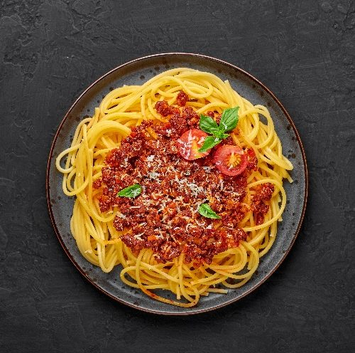

Spaghetti

This is a classic Swiss dish. It gained its reputation because of the very high calorie in a very easy to make dish. Because this dish was used in country heavy on farmers, it became increasingly popular. One meal in the morning fueled the farmers till noon.
Ingredients:
- Potato
- Salt
- Butter
- Milk
- Cheese
- Olive Oil
Steps:
- Boil the potatoes
- Leave the potatoes in the fridge for one night
- Grate the potatoes
- Heat pan with olive oil
- Put butter in
- Put all the grated potato in the pan
- When needed, add a table spoon of milk for crust
- Keep the outside integrity, and let it turn brownish
- Remove and eat with cheese